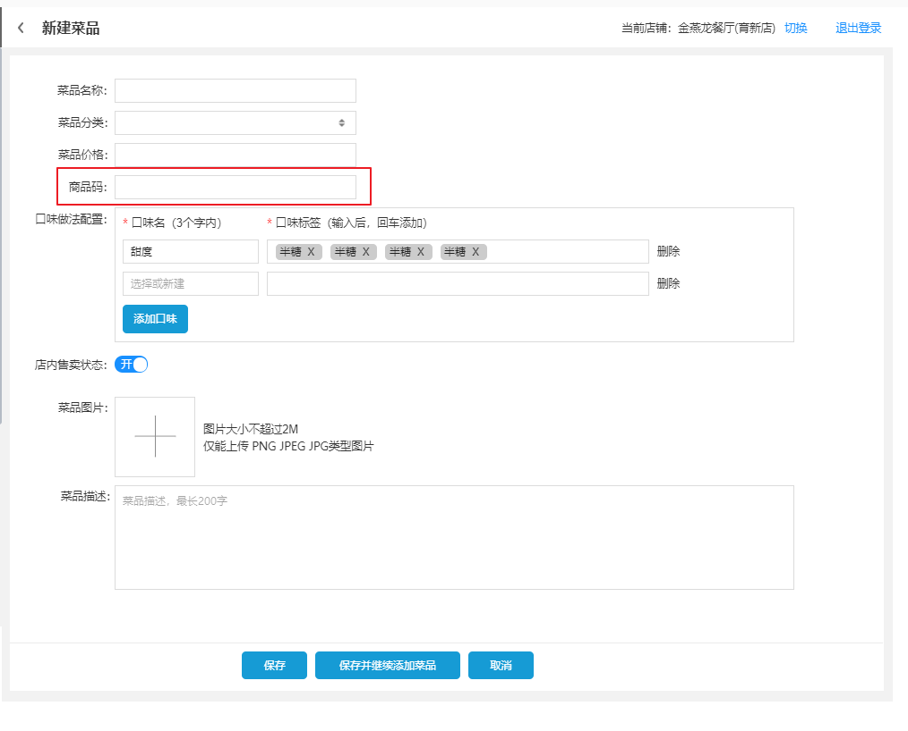
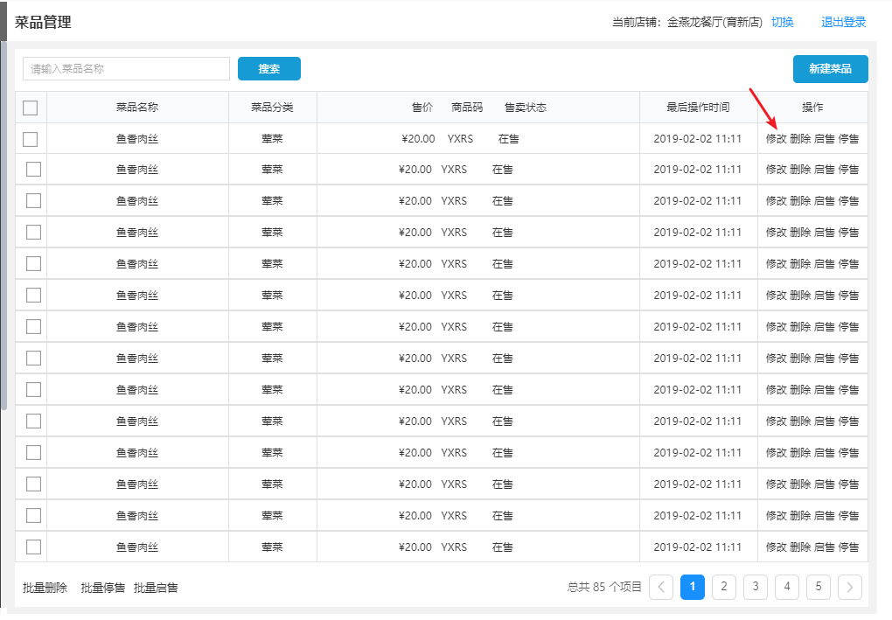

第5章 餐掌柜管家端开发-3
学习目标
目标1：完成分类管理功能
目标2：完成菜品管理功能
目标3：完成套餐管理功能
1 分类管理
1.1 需求分析
分类包括菜品，套餐，type=1 表示菜品，type=2表示套餐
1.2 实现思路
t_category（菜品和套餐分类表）
1.3 代码实现
1.3.1 分类添加
（1）在restkeeper_store_api中导入分类对象DishCategory 并建立IDishCategoryService 业务接口
xxxxxxxxxx101public interface IDishCategoryService extends IService<Dish>{2 3 /**4 * 添加5 * @param name6 * @param type7 * @return8 */9 boolean add(String name, int type); 10}（2）在restkeeper_store中导入DishCategoryMapper.java、DishCategoryMapper.xml，并建立DishCategoryServiceImpl类
x1(version = "1.0.0",protocol = "dubbo")3public class DishCategoryServiceImpl extends ServiceImpl<DishCategoryMapper, DishCategory> implements IDishCategoryService {45 6 7 public boolean add(String name,int type) {8 checkNameExsis(name);9 DishCategory dishCategory = new DishCategory();10 dishCategory.setName(name);11 //默认排序012 dishCategory.setTorder(0);13 dishCategory.setType(type);14 return this.save(dishCategory);15 }16 1718 private void checkNameExist(String name) {19 QueryWrapper<DishCategory> queryWrapper = new QueryWrapper<>();20 queryWrapper.lambda().select(DishCategory::getCategoryId).eq(DishCategory::getName,name);21 Integer count = this.getBaseMapper().selectCount(queryWrapper);2223 if (count>0) throw new BussinessException("该分类名称已存在");24 }25}（3）restkeeper_enterprise_web新增AddDishCategoryVO，进行新增数据接收
xxxxxxxxxx91public class AddDishCategoryVO {34 (value = "分类名称")5 private String categoryName;67 (value = "分类类型")8 private int type;9}（4）更新restkeeper_enterprise_web新增DishCategoryController
xxxxxxxxxx161(tags = { "分类管理" })3("/dishCategory")5public class DishCategoryController {67 (version = "1.0.0",check = false)8 private IDishCategoryService dishCategoryService;910 11 (value = "添加分类")12 ("/add")13 public boolean add( AddDishCategoryVO addDishCategoryVO){14 return dishCategoryService.add(addDishCategoryVO.getCategoryName(),addDishCategoryVO.getType());15 }16}1.3.2 分类修改
（1）在restkeeper_store_api 中的IDishCategoryService 添加
xxxxxxxxxx71/**2 * 修改3 * @param id4 * @param name5 * @return6 */7boolean update(String id, String categoryName);（2）在restkeeper_store 中的DishCategoryServiceImpl 添加
xxxxxxxxxx91public boolean update(String id, String categoryName) {3 checkNameExsis(categoryName);4 UpdateWrapper<DishCategory> uw = new UpdateWrapper<>();5 uw.lambda()6 .eq(DishCategory::getCategoryId,id)7 .set(DishCategory::getName,categoryName);8 return this.update(uw);9}（3）restkeeper_enterprise_web的 DishCategoryController中添加
xxxxxxxxxx91/**2 * 修改分类名称3 * @return4 */5(value = "修改分类")6("/update/{id}")7public boolean update( String id, (name="categoryName") String categoryName){8 return dishCategoryService.update(id, categoryName);9}1.3.3 分类分页列表
（1）在restkeeper_store_api 中的DishCategoryServiceImpl 添加
xxxxxxxxxx71/**2 * 分页3 * @param pageIndex4 * @param pageSize5 * @return6 */7IPage<DishCategory> queryPage(int pageNum, int pageSize);2) 在restkeeper_store 中的IDishCategoryService 添加
xxxxxxxxxx81public IPage<DishCategory> queryPage(int pageNum, int pageSize) {3 IPage<DishCategory> page = new Page<>(pageNum,pageSize);4 QueryWrapper<DishCategory> qw = new QueryWrapper<>();5 qw.lambda()6 .orderByDesc(DishCategory::getLastUpdateTime);7 return this.page(page);8}3）restkeeper_enterprise_web的 DishCategoryController中添加
xxxxxxxxxx81(value = "分页列表")2({3 (paramType = "path", name = "page", value = "当前页码", required = true, dataType = "Integer"),4 (paramType = "path", name = "pageSize", value = "分页大小", required = true, dataType = "Integer")})5("/pageList/{page}/{pageSize}")6public PageVO<DishCategory> findByPage( Integer page, Integer pageSize){7 return new PageVO<>(dishCategoryService.queryPage(page,pageSize));8}1.3.4 分类列表查询
列表在菜品和套餐维护中会使用，提前提供
1) 在restkeeper_store_api 中的IDishCategoryService 添加
xxxxxxxxxx61/**2 * 根据分类获取下拉列表3 * @param type4 * @return5 */6List<Map<String,Object>> findCategoryList(Integer type);2) 在restkeeper_store 中的IDishCategoryService 添加
xxxxxxxxxx101public List<Map<String, Object>> findCategoryList(Integer type) {3 QueryWrapper<DishCategory> queryWrapper = new QueryWrapper<>();45 if (type != null){6 queryWrapper.lambda().eq(DishCategory::getType,type);7 }8 queryWrapper.lambda().select(DishCategory::getCategoryId,DishCategory::getName);9 return this.listMaps(queryWrapper);10}3）restkeeper_enterprise_web的 DishCategoryController中添加
xxxxxxxxxx101/**2 * 菜品，套餐分类下拉列表使用3 * 1 菜品 2 套餐4 * @return5 */6(value = "添加分类")7("/type/{type}")8public List<Map<String,Object>> getByType( Integer type){9 return dishCategoryService.findCategoryList(type);10}分类删除需要考虑 和菜品，套餐关系，4.5小结统一处理
2. 菜品管理
2.1 菜品和分类关系维护
2.1.1 需求分析
菜品列表页面需要显示菜品分类，菜品和分类是多对一关系
2.1.2 实现思路
(1) t_dish（菜品表）
2.1.3 代码实现
(1) 在restkeeper_store_api中导入菜品对象Dish，添加两者关联对象，并创建相关业务层接口
在Dish中添加
xxxxxxxxxx31(value = "所属分类对象")2(exist = false)3private DishCategory dishCategory;在DishCategory 中添加
xxxxxxxxxx31(value = "菜品列表")2(exist = false)3private List<Dish> dishList;（2） 在restkeeper_store中导入DishMapper.xml，添加分类和菜品一对多关系
xxxxxxxxxx131 2<mapper namespace="com.restkeeper.store.mapper.DishMapper">45 <!-- 通用查询映射结果 -->6 <resultMap id="BaseResultMap" type="com.restkeeper.store.entity.Dish">7 <id column="dish_id" property="dishId" />8 <result column="category_id" property="categoryId" />9 <result column="dish_name" property="name" />10 <association property="dishCategory" column="categoryId" select="com.restkeeper.store.mapper.DishCategoryMapper.selectById"></association>11 </resultMap>1213</mapper>（3）导入DishMapper，并添加根据分类id查询菜品集合方法
xxxxxxxxxx21(value="select * from t_dish where category_id=#{dishCategoryId} and is_deleted=0 order by last_update_time desc")2public List<Dish> selectDishByCategory(("dishCategoryId") String dishCategoryId);（4）更新CategoryMapper.xml，设置关联查询
xxxxxxxxxx111 2<mapper namespace="com.restkeeper.store.mapper.DishCategoryMapper">45 <!-- 通用查询映射结果 -->6 <resultMap id="BaseResultMap" type="com.restkeeper.store.entity.DishCategory">7 <id column="category_id" property="categoryId" />8 <collection property="dishList" column="category_id" select="com.restkeeper.store.mapper.DishMapper.selectDishByCategory"></collection>9 </resultMap>1011</mapper>2.2 菜品和口味关系维护
2.2.1 需求分析
一个菜品有多种口味，每种口味包含一系列小项
2.2.2 实现思路
t_dish_flavor（菜品口味表）
菜品和口味是一对多关系，每种口味包含一系列小项，采用集合数组放在flavor_value字段中
2.2.3 代码实现
（1）配置口味与菜品关联关系
在restkeeper_store_api工程中导入口味实体类DishFlavor.java，并创建相关业务层接口
在restkeeper_store工程中导入 DishFlavorMapper.java DishFlavorMapper.xml，并创建相关业务层实现类
在restkeeper_store_api 工程 Dish 实体类中追加与口味的关联关系
xxxxxxxxxx31(value = "口味列表")2(exist = false)3private List<DishFlavor> flavorList;（2）在restkeeper_store 工程 DishFlavorMapper.java中添加
xxxxxxxxxx51public interface DishFlavorMapper extends BaseMapper<DishFlavor>{3 (value="select * from t_dish_flavor where dish_id=#{dishId} order by last_update_time desc")4 public List<DishFlavor> selectFlavors(("dishId") String dishId);5}（3）在restkeeper_store工程DishMapper.xml中添加
xxxxxxxxxx71<!-- 通用查询映射结果 -->2 <resultMap id="BaseResultMap" type="com.restkeeper.store.entity.Dish">3 <id column="dish_id" property="dishId" />4 <result column="category_id" property="categoryId" />5 <association property="dishCategory" column="categoryId" select="com.restkeeper.store.mapper.DishCategoryMapper.selectById"></association>6 <collection property="flavorList" column="dish_id" select="com.restkeeper.store.mapper.DishFlavorMapper.selectFlavors"></collection>7 </resultMap> 2.3 图片缩略图支持
2.3.1 需求分析
菜品图片需要支持缩略图，方便展示
2.3.2 实现思路
使用OSS支持的缩放功能，OSS是使用通过URL尾部的参数指定图片的缩放大小
图片路径后面拼接如下路径： ?x-oss-process=image/[处理类型],x_100,y_50[宽高等参数]
2.3.3 代码实现
restkeeper_enterprise_web 工程的FileUploadController 中添加
xxxxxxxxxx141(value = "/imageUploadResize")2(paramType = "form", dataType = "file", name = "fileName", value = "上传文件", required = true)3public String imageUploadResize(("fileName") MultipartFile file) {4 5 String fileName = System.currentTimeMillis()+"_"+file.getOriginalFilename();6 7 try {8 ossClient.putObject(bucketName, fileName, file.getInputStream());9 } catch (Exception e) {10 e.printStackTrace();11 }12 String imagePath = "https://" + bucketName + "."+endpoint+"/"+ fileName+"?x-oss-process=image/resize,m_fill,h_100,w_200";13 return imagePath;14}2.4 商品码支持
2.4.1 需求分析

当用户输入中文菜品时候，需要转换成拼音 例如 菜品名是宫保鸡丁 商品码自动翻译成gongbaojiding，这样方便快捷搜索
2.4.2 实现思路
Pinyin4j是一个流行的Java库，支持中文字符和拼音之间的转换，拼音输出格式可以定制，在项目中经常会遇到需求用户输入汉字后转换为拼音的场景，这时候Pinyin4j就可以派上用场
2.4.3 代码实现
（1）在restkeeper_common工程pom.xml文件中
xxxxxxxxxx51<dependency>2 <groupId>com.belerweb</groupId>3 <artifactId>pinyin4j</artifactId>4 <version>2.5.1</version>5</dependency>（2）在restkeeper_common 中添加
xxxxxxxxxx321package com.restkeeper.utils;23/**4 * 汉字转拼音工具类5 */6public class PinyinUtil {7 /**8 * 将文字转为汉语拼音（小写）9 * @param ChineseLanguage 要转成拼音的中文10 */11 public static String toHanyuPinyin(String ChineseLanguage) {12 String hanyupinyin = "";13 try {14 char[] cl_chars = ChineseLanguage.trim().toCharArray();15 HanyuPinyinOutputFormat defaultFormat = new HanyuPinyinOutputFormat();16 defaultFormat.setCaseType(HanyuPinyinCaseType.UPPERCASE); // 输出拼音全部大写17 defaultFormat.setToneType(HanyuPinyinToneType.WITHOUT_TONE); // 不带声调18 defaultFormat.setVCharType(HanyuPinyinVCharType.WITH_V) ;19 for (int i=0; i<cl_chars.length; i++){20 if (String.valueOf(cl_chars[i]).matches("[\u4e00-\u9fa5]+")){// 如果字符是中文,则将中文转为汉语拼音21 hanyupinyin += PinyinHelper.toHanyuPinyinStringArray(cl_chars[i], defaultFormat)[0];22 } else {// 如果字符不是中文,则不转换23 hanyupinyin += cl_chars[i];24 }25 }26 } catch (BadHanyuPinyinOutputFormatCombination e) {27 e.printStackTrace();28 throw new BussinessException("转换失败"+e);29 }30 return hanyupinyin;31 }32}（3）在restkeeper_web_common 中添加
xxxxxxxxxx201package com.restkeeper;23("/common")6(tags = { "通用接口" })7public class CommonController{8910 ("/toHanyuPinyin/{chineseLanguage}")11 (value = "中文转换汉语拼音")12 (paramType="path", name = "chineseLanguage", value = "汉语拼音", required = true, dataType = "String")13 public Result toHanyuPinyin( String chineseLanguage) throws BadHanyuPinyinOutputFormatCombination {14 Result result = new Result();15 result.setStatus(ResultCode.success);16 result.setDesc("ok");17 result.setData(PinyinUtil.toHanyuPinyin(chineseLanguage));18 return result;19 }20}2.5 添加菜品
2.5.1 需求分析
保存菜品时候需要维护 菜品和分类，菜品口味关系，缩略图，商品码等关系, 点击保存时候，数据整体提交到后台
2.5.2 实现思路
（1）菜品，分类，口味相关基本接口信息维护后台接口已完成
（2）现在需要根据前端页面统一做数据封装
前端按照如下格式传给后端
xxxxxxxxxx171 "categoryId""string"3 "code""string"4 "description""string"5 "dishFlavors"6 7 "flavor""string"8 "flavorData"9 "string" "string"10 11 12 13 "image""string"14 "name""string"15 "price"016 "status"1172.5.3 代码实现
（1）更新restkeeper_store_api工程中的IDishService，添加新增方法
xxxxxxxxxx11boolean save(Dish dish, List<DishFlavor> flavorList);（2）更新restkeeper_store工程中的DishServiceImpl，实现新增方法
xxxxxxxxxx291.springframework.stereotype.Service("dishService")2 (version = "1.0.0",protocol = "dubbo")3 public class DishServiceImpl extends ServiceImpl<DishMapper, Dish> implements IDishService {45 6 ("dishFlavorService")7 private IDishFlavorService dishFlavorService;89 10 11 public boolean save(Dish dish, List<DishFlavor> dishFlavorList) {1213 try {14 //保存菜品15 this.save(dish);1617 //保存口味18 dishFlavorList.forEach((dishFlavor)->{19 dishFlavor.setDishId(dish.getId());20 });21 dishFlavorService.saveBatch(dishFlavorList);2223 return true;24 } catch (Exception e) {25 e.printStackTrace();26 return false;27 }28 }29 }（3）前端VO封装，restkeeper_enterprise_web 工程中新建DishFlavorVO、DishVO
xxxxxxxxxx91package com.restkeeper.vo.store;23public class DishFlavorVO {5 (value = "口味")6 private String flavor;7 (value = "口味标签")8 private List<String> flavorData;9}xxxxxxxxxx311package com.restkeeper.vo.store;23public class DishVO{5 (value = "菜品id")6 private String id; //添加时候可以不传7 8 (value = "菜品名称")9 private String name;10 11 (value = "分类id")12 private String categoryId;13 14 (value = "价格")15 private Integer price;16 17 (value = "菜品code")18 private String code;19 20 (value = "图片路径")21 private String image;22 23 (value = "备注")24 private String description;25 26 (value = "状态 0 停售，1起售")27 private Integer status = SystemCode.ENABLED; //默认起售28 29 (value = "状态")30 private List<DishFlavorVO> dishFlavors;31}（4） 更新restkeeper_enterprise_web新增DishController
xxxxxxxxxx291(tags = { "菜品管理" })3("/dish")5public class DishController {67 (version = "1.0.0",check = false)8 private IDishService dishService;910 (value = "添加菜品")11 ("/add")12 public boolean add( DishVO dishVO){13 //设置菜品14 Dish dish = new Dish();15 BeanUtils.copyProperties(dishVO, dish);1617 //设置口味18 List<DishFlavorVO> dishFlavorsVO = dishVO.getDishFlavors();19 List<DishFlavor> flavorList =new ArrayList<DishFlavor>();20 for (DishFlavorVO dishFlavorVO : dishFlavorsVO) {2122 DishFlavor dishFlavor = new DishFlavor();23 dishFlavor.setFlavorName(dishFlavorVO.getFlavor());24 dishFlavor.setFlavorValue(dishFlavorVO.getFlavorData().toString());25 flavorList.add(dishFlavor);26 }27 return dishService.save(dish,flavorList);28 }29}2.6 菜品信息回显
2.6.1 需求分析

当用户点击修改，会进入到编辑页面，同时将当前菜品信息进行回显。
2.6.2 实现思路
添加根据id查询菜品基本信息，分类和口味关联信息
2.6.3 代码实现
更新restkeeper_enterprise_web中的DishController，新增查询方法
xxxxxxxxxx271("/{id}")2(value = "根据id获取菜品信息")3public DishVO getDish( String id){4 Dish dish = dishService.getById(id);5 if(dish==null){6 throw new BussinessException("菜品不存在");7 }8 DishVO dishVo =new DishVO();9 BeanUtils.copyProperties(dish, dishVo);10 //口味列表11 List<DishFlavorVO> dishFlavorVOList=new ArrayList<>();12 List<DishFlavor> dishFlavorList = dish.getFlavorList();13 for (DishFlavor flavor : dishFlavorList) {14 DishFlavorVO dishFlavorVO= new DishFlavorVO();15 dishFlavorVO.setFlavor(flavor.getFlavorName());16 String flavorValue = flavor.getFlavorValue();17 //处理字符串数组18 String quflavorValue=flavorValue.substring(flavorValue.indexOf("[")+1,flavorValue.indexOf("]"));19 if(StringUtils.isNotEmpty(quflavorValue)){20 String[] flavor_array= quflavorValue.split(",");21 dishFlavorVO.setFlavorData(Arrays.asList(flavor_array));22 }23 dishFlavorVOList.add(dishFlavorVO);24 }25 dishVo.setDishFlavors(dishFlavorVOList);26 return dishVo;27}2.7 修改菜品
2.7.1 需求分析
修改页面会读取回显接口数据展现，然后根据当前菜品id修改菜品
2.7.2 实现思路
（1）修改过程中不仅是修改菜品信息，还要考虑分类修改，口味修改
（2）分类修改直接修改id
（3）口味修改可以先物理删除，再添加.
（4） 前端按照如下格式传给后端
xxxxxxxxxx181{2 "id": "string",3 "categoryId": "string",4 "code": "string",5 "description": "string",6 "dishFlavors": [7 {8 "flavor": "string",9 "flavorData": [10 "string", "string"11 ]12 }13 ],14 "image": "string",15 "name": "string",16 "price": 0,17 "status": 118}2.7.3 代码实现
（1）在restkeeper_store_api工程的 IDishService 类中添加
xxxxxxxxxx11boolean update(Dish dish, List<DishFlavor> flavorList); （2）在restkeeper_store工程的 DishServiceImpl类中添加
xxxxxxxxxx141(rollbackFor = {Exception.class})3public boolean update(Dish dish, List<DishFlavor> flavorList) {4 this.updateById(dish);5 //删除原来口味关系6 QueryWrapper<DishFlavor> dishFlavorQueryWrapper =new QueryWrapper<>();7 dishFlavorQueryWrapper.lambda().eq(DishFlavor::getDishId,dish.getId());8 dishFlavorService.remove(dishFlavorQueryWrapper);9 //建立新的口味关系10 flavorList.forEach(flavor->{11 flavor.setDishId(dish.getId());12 });13 return dishFlavorService.saveBatch(flavorList);14}（3）更新restkeeper_enterprise_web工程的DishController
xxxxxxxxxx241(value = "修改菜品")2("/update")3public boolean update( DishVO dishVO){45 Dish dish = dishService.getById(dishVO.getDishId());6 BeanUtils.copyProperties(dishVO, dish);78 //设置口味9 List<DishFlavor> flavorList = setDishFlavors(dishVO);10 return dishService.update(dish,flavorList);11}1213//设置口味14private List<DishFlavor> setDishFlavors(DishVO dishVO) {15 List<DishFlavorVO> dishFlavorsVO = dishVO.getDishFlavors();16 List<DishFlavor> flavorList = new ArrayList<DishFlavor>();17 for (DishFlavorVO dishFlavorVO : dishFlavorsVO) {18 DishFlavor dishFlavor = new DishFlavor();19 dishFlavor.setFlavorName(dishFlavorVO.getFlavor());20 dishFlavor.setFlavorValue(dishFlavorVO.getFlavorData().toString());21 flavorList.add(dishFlavor);22 }23 return flavorList;24}3. 套餐管理
3.1 套餐列表
3.1.1 需求分析

套餐列表需要显示套餐基本信息，及分类信息
3.1.2 实现思路
t_setmeal（套餐表）
3.1.2 代码实现
（1）导入相关基础信息
在restkeeper_store_api工程中导入SetMeal.java并创建业务层接口
在restkeeper_store工程中导入SetMealMapper.java、SetMealMapper.xml并创建业务层实现类
（2）创建套餐与分类关联关系 更新SetMeal，添加分类对象属性
xxxxxxxxxx21(exist = false)2private DishCategory category;（3）更新SetMealMapper.xml，添加关联查询
xxxxxxxxxx101<mapper namespace="com.restkeeper.store.mapper.SetMealMapper">23 <!-- 通用查询映射结果 -->4 <resultMap id="BaseResultMap" type="com.restkeeper.store.entity.SetMeal">5 <id column="setmeal_id" property="setmealId" />6 <result column="category_id" property="categoryId" />7 <result column="setmeal_name" property="name" />8 <association property="category" column="category_id" select="com.restkeeper.store.mapper.DishCategoryMapper.selectById"></association>9 </resultMap>10</mapper>（4）更新restkeeper_store_api中的ISetMealService，新增分页查询方法
xxxxxxxxxx41public interface ISetMealService extends IService<SetMeal> {23 IPage<SetMeal> queryPage(int pageNum,int pageSize,String name);4}（5）更新restkeeper_store中的SetMealServiceImpl，实现分页查询方法
xxxxxxxxxx161(version = "1.0.0",protocol = "dubbo")2.springframework.stereotype.Service("setMealService")3 public class SetMealServiceImpl extends ServiceImpl<SetMealMapper, SetMeal> implements ISetMealService {45 6 public IPage<SetMeal> queryPage(int pageNum, int pageSize, String name) {78 IPage<SetMeal> page = new Page<>(pageNum,pageSize);910 QueryWrapper<SetMeal> queryWrapper = new QueryWrapper<>();11 if (StringUtils.isNotEmpty(name)){12 queryWrapper.lambda().like(SetMeal::getName,name);13 }14 return this.page(page,queryWrapper);15 }16 }（6）更新restkeeper_enterprise_web，新增SetMealController
xxxxxxxxxx171(tags = {"套餐管理"})3("/setMeal")5public class SetMealController {67 (version = "1.0.0",check = false)8 private ISetMealService setMealService;910 ("套餐分页查询")11 ("/queryPage/{page}/{pageSize}")12 public PageVO<SetMeal> queryPage(("page") Integer page,13 ("pageSize") Integer pageSize,14 (value="name",required=false) String name){15 return new PageVO<>(setMealService.queryPage(page, pageSize, name));16 }17}3.2 新建套餐
3.2.1 需求分析
添加套餐原型
添加关联菜品
3.2.2 实现思路
（1）套餐和菜品是多对多关系， t_setmeal_dish表是套餐与菜品关联表
涉及到的相关功能列表：
（1）套餐中添加菜品的分类列表 1.3.4 已经提供
（2）需要提供根据菜品名称与分类信息查询的菜品列表接口
（3）需要提供套餐保存接口
3.2.3 代码实现
3.2.3.1 根据分类信息与菜品名称查询菜品列表
（1）更新restkeeper_store_api中的IDishService，添加查询方法
xxxxxxxxxx11List<Map<String,Object>> findEnableDishListInfo(String categoryId, String name);（2）更新restkeeper_store中的DishServiceImpl，实现查询方法
xxxxxxxxxx171 2 public List<Map<String,Object>> findEnableDishListInfo(String categoryId, String name) {34 QueryWrapper<Dish> queryWrapper = new QueryWrapper<>();5 queryWrapper.lambda().select(Dish::getId,Dish::getName,Dish::getStatus,Dish::getPrice);67 if (StringUtils.isNotEmpty(categoryId)){8 queryWrapper.lambda().eq(Dish::getCategoryId,categoryId);9 }10 if (StringUtils.isNotEmpty(name)){11 queryWrapper.lambda().eq(Dish::getName,name);12 }1314 queryWrapper.lambda().eq(Dish::getStatus, SystemCode.ENABLED);1516 return this.listMaps(queryWrapper);17 }（3）更新restkeeper_enterprise_web中的DishController
xxxxxxxxxx61(value = "查询可用的菜品列表")2("/findEnableDishList/{categoryId}")3public List<Map<String,Object>> findEnableDishList( String categoryId,4 (value="name",required=false) String name){5 return dishService.findEnableDishListInfo(categoryId, name);6}3.2.3.2 保存套餐信息
（1） 导入相关资源
在 restkeeper_store_api工程中导入SetmealDish.java 并创建业务层接口
在restkeeper_store工程中导入SetmealDishMapper.java、SetmealDishMapper.xml并创建业务层实现类
更新restkeeper_store_api工程中的ISetMealService，新增添加套餐方法
xxxxxxxxxx11boolean add(SetMeal setmeal, List<SetMealDish> setMealDishes);（2）更新restkeeper_store工程中的SetMealServiceImpl，实现新增方法
xxxxxxxxxx191(version = "1.0.0",protocol = "dubbo")2.springframework.stereotype.Service("setMealService")3public class SetMealServiceImpl extends ServiceImpl<SetMealMapper, SetMeal> implements ISetMealService {45 6 ("setMealDishService")7 private ISetMealDishService setMealDishService;89 10 11 public boolean add(SetMeal setMeal, List<SetMealDish> setMealDishes) {12 this.save(setMeal);13 setMealDishes.forEach(s->{14 s.setSetmealId(setMeal.getId());15 s.setIndex(0);16 });17 return setMealDishService.saveBatch(setMealDishes);18 }19}（3）前端按照如下json格式提交数据
xxxxxxxxxx161{2 "categoryId": "string",3 "code": "string",4 "description": "string",5 "dishList": [6 {7 "copies": 0, //份数8 "dishId": "string",9 "dishName": "string"10 }11 ],12 "image": "string",13 "name": "string",14 "price": 0,15 "status": 116}后端更新restkeeper_enterprise_web工程，新增VO
xxxxxxxxxx301public class SetMealVO {34 (value = "套餐id")5 private String id; //添加时候不传67 (value = "分类id")8 private String categoryId;910 (value = "套餐名称")11 private String name;1213 (value = "套餐价格")14 private Integer price;1516 (value = "状态 0停售，1起售")17 private Integer status;1819 (value = "商品码")20 private String code;2122 (value = "描述信息")23 private String description;2425 (value = "图片")26 private String image;2728 (value = "菜品")29 private List<SetMealDishVO> dishList;30}xxxxxxxxxx191public class SetMealDishVO {3 /**4 * 菜品Id5 */6 (value = "菜品id")7 private String dishId;89 /**10 * 菜品名称11 */12 (value = "菜品名称")13 private String dishName;14 /**15 * 份数16 */17 (value = "份数")18 private int copies;19}（4）更新restkeeper_enterprise_web工程中的SetMealController
xxxxxxxxxx231/**2 * 添加套餐3 * @param setmealVO4 */5(value = "添加套餐")6("/add")7public boolean add( SetMealVO setMealVO) {8 SetMeal setMeal = new SetMeal();9 BeanUtils.copyProperties(setMealVO,setMeal);1011 List<SetmealDish> setMealDishList = Lists.newArrayList();12 if(setMealVO.getDishList() != null){13 setMealVO.getDishList().forEach(d->{14 SetMealDish setMealDish = new SetMealDish();15 setMealDish.setIndex(0);16 setMealDish.setDishCopies(d.getCopies());17 setMealDish.setDishId(d.getDishId());18 setMealDishList.add(setMealDish);19 });20 }2122 return setmealService.add(setmeal,setmealDishList);23}3.3 套餐信息回显
3.3.1 需求分析
当用户点击修改时，首先需要将当前套餐进行回显
3.3.2 实现思路
根据套餐id回显套餐基础信息和关联的菜品列表信息
3.3.3 代码实现
（1）更新Setmeal ，添加与套餐菜品表关联关系
xxxxxxxxxx21(exist = false)2private List<SetMealDish> dishList;（2）更新restkeeper_store中的SetMealDishMapper，添加关联查询方法
xxxxxxxxxx21(value="select * from t_setmeal_dish where setmeal_id=#{setMealId}")2List<SetMealDish> selectDishes(("setMealId") String setMealId);（3）更新restkeeper_store中的SetMealMapper.xml
xxxxxxxxxx11<collection column="setmeal_id" property="dishList" select="com.restkeeper.store.mapper.SetmealDishMapper.selectDishes"/>（4）更新restkeeper_enterprise_web中的SetMealController，添加查询方法
xxxxxxxxxx241("/{id}")2(value = "根据id获取套餐信息")3public SetMealVO getDish( String id){45 SetMeal setMeal = setMealService.getById(id);6 if(setMeal==null){7 throw new BussinessException("套餐不存在");8 }9 SetMealVO setMealVo=new SetMealVO();10 BeanUtils.copyProperties(setMeal, setMealVo);11 //口味列表12 List<SetMealDish> setMealDishList = setMeal.getDishList();13 List<SetMealDishVO> setMealDishVOList=new ArrayList<>();14 for (SetMealDish setMealDish : setMealDishList) {15 SetMealDishVO setMealDishVO =new SetMealDishVO();16 setMealDishVO.setDishId(setmealDish.getDishId());17 setMealDishVO.setDishName(setMealDish.getDishName());18 setMealDishVO.setCopies(setMealDish.getDishCopies());19 setMealDishVOList.add(setMealDishVO);20 }2122 setMealVo.setDishList(setMealDishVOList);23 return setMealVo;24}3.4 修改套餐
3.4.1 需求分析
对回显信息进行内容修改，并保存到数据库
3.4.2 实现思路
（1）保存套餐基本信息
（2）删除原有关联菜品信息，并重新添加
（3）前端按照如下json提交后台
xxxxxxxxxx171{2 "id": "string",3 "categoryId": "string",4 "code": "string",5 "description": "string",6 "dishList": [7 {8 "copies": 0,9 "dishId": "string",10 "dishName": "string"11 }12 ],13 "image": "string",14 "name": "string",15 "price": 0,16 "status": 017}3.4.3 代码实现
（1）更新restkeeper_store_api中的ISetMealService，添加修改方法
xxxxxxxxxx11boolean update(SetMeal setMeal, List<SetMealDish> setMealDishes);（2）更新restkeeper_store中的SetMealServiceImpl ，实现修改方法
xxxxxxxxxx291public boolean update(SetMeal setMeal, List<SetMealDish> setMealDishes) {45 try {6 //修改套餐基础信息7 this.updateById(setMeal);89 //删除原有的菜品关联关系10 if (setMealDishes != null || setMealDishes.size()>0){1112 QueryWrapper<SetMealDish> queryWrapper =new QueryWrapper<>();13 queryWrapper.lambda().eq(SetMealDish::getSetMealId,setMeal.getId());14 setMealDishService.remove(queryWrapper);1516 //重建菜品的关联关系17 setMealDishes.forEach((setMealDish)->{18 setMealDish.setSetMealId(setMeal.getId());19 });2021 setMealDishService.saveBatch(setMealDishes);22 }2324 return true;25 } catch (Exception e) {26 e.printStackTrace();27 return false;28 }29}（3）更新restkeeper_enterprise_web中的SetMealController
181 ("/update")2 public boolean update( SetMealVO setMealVo){3 SetMeal setMeal = setMealService.getById(setMealVo.getId());4 BeanUtils.copyProperties(setMealVo,setMeal);5 setMeal.setDishList(null);6 7 List<SetMealDish> setMealDishList = Lists.newArrayList();8 if(setMealVo.getDishList() != null){9 setMealVo.getDishList().forEach(d->{10 SetMealDish setMealDish = new SetMealDish();11 setMealDish.setIndex(0);12 setMealDish.setDishCopies(d.getCopies());13 setMealDish.setDishId(d.getDishId());14 setMealDishList.add(setmealDish);15 });16 }17 return setmealService.update(setMeal,setMealDishList);18 }